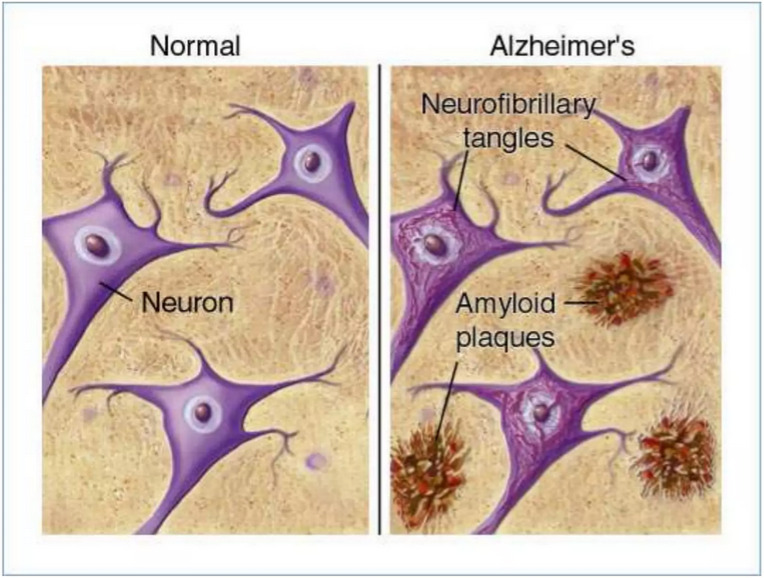
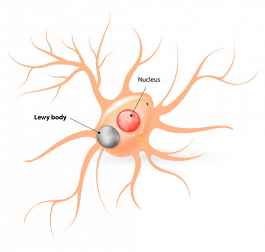
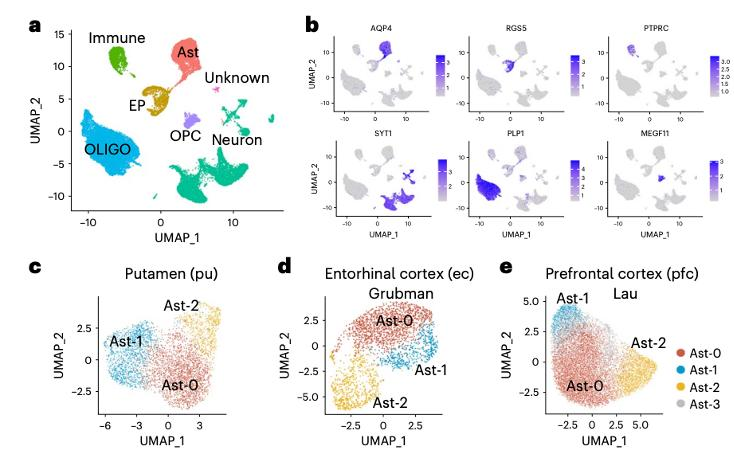
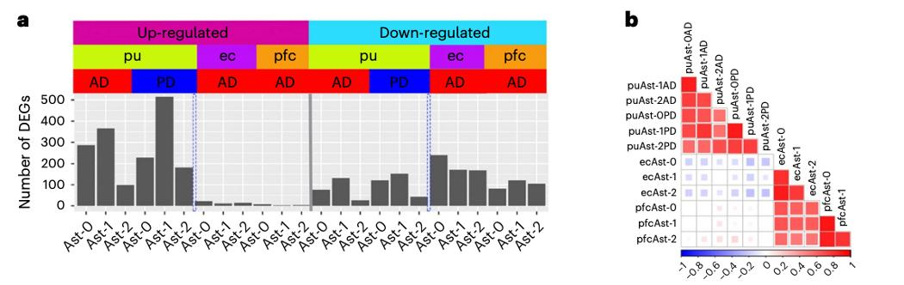
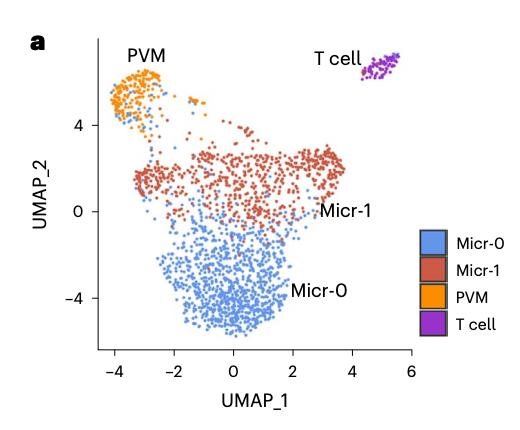
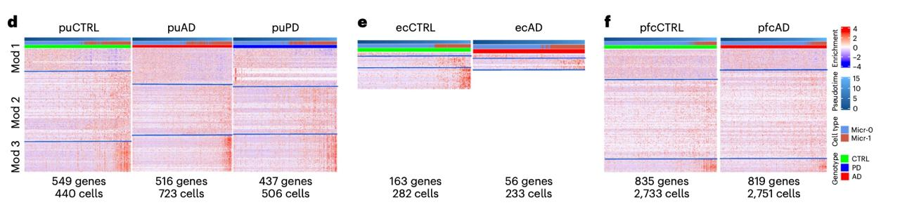
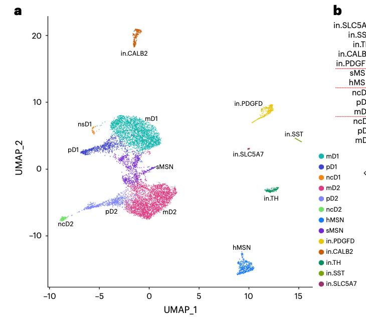

Este atrículo describe los estados transcriptómicos de nucelos individuales, específicamente en subpoblaciones de 3 tipos celulares:
Astrocitos: Se decribieron tres sub-poblaciones de astrocitos altamente conservadas entre ratones y humanos. Espefícicamente, se revelaron características similares entre astrocitos de AD y PD, así como sus diferencias regionales que contribuyen a la neurodegeneración y amiloidopatías.
Microglías: En el caso de las microglías activadas, los cambios transcriptómicos entre ámbas patologías son únicas para cada desorden.
Indeterminadas: Por último, también describieron los perfiles transcriptómicos de poblaciones no descritas anteriormente, viendo como cambian en ámbas patologías.
Paper: Xu, J., et. al (2023). Human striatal glia differentially contribute to AD- and PD-specific neurodegeneration. Nature Aging, 3(3), 346–365. https://doi.org/10.1038/s43587-023-00363-8
AD: Alzheimer’s disease, PD: Parkinson’s disease
Las proteínas defectuosas por patología son:
AD:
PD:
En un cerebro no patológico, la microglía actua como un limpiador de estas acumulaciones. Esto lo hace por medio de la fagocitosis de acumulaciones de estas proteínas, ya sea extra o intra celulares. (En esta última se fagocita a la neurona).


Conociendo esta información previa, es evidente que tanto AD como PD comparten muchas características. Es por esto que las diferencias y similitudes entre los pathways que las producen son muchas veces, desconocidas.
Este artículo propone que el perfil transcriptómico de las microglias en ámbos desordenes comparados con los controles nos puede dar más información acerca de las diferencias entre si y como afecta la neurodegeneración y patologías amiloides.
Información general:
Bioproject: PRJNA675355
Número de acceso de la base de datos GEO: GSE161045
Especie: Homo sapiens
Número de transcriptomas: 12
Número de réplicas biológicas: 6 de control (SRX9456983, SRX9456984, SRX9456985, SRX9456986), 4 replicas de Parkinson disease (SRX9456991, SRX9456992, SRX9456993, SRX9456994), y 4 de Alzheimer Disease (SRX9456987, SRX9456988, SRX9456989, SRX9456990).
Secuenciador empleado: Illumina Nova-seq 6000
DISCLAIMER: Todos los pacientes declararon el consentimiento de donación de sus órganos antes de la aparición de discapacidad cognitiva.
En los casos donde no, fue el allegado más cercano el que declaró el consentimiento.
Los pasos seguidos a grandes rasgos son:
Esto se hizo con el fin de agrupar poblaciones celulares entre los tejidos y observar las diferencias entre los astrocitos del grupo de control, con PD o AD, así como también de células inmunes y neuronas. También se relaizó un análisis de expresión diferencial en cada muestra.




